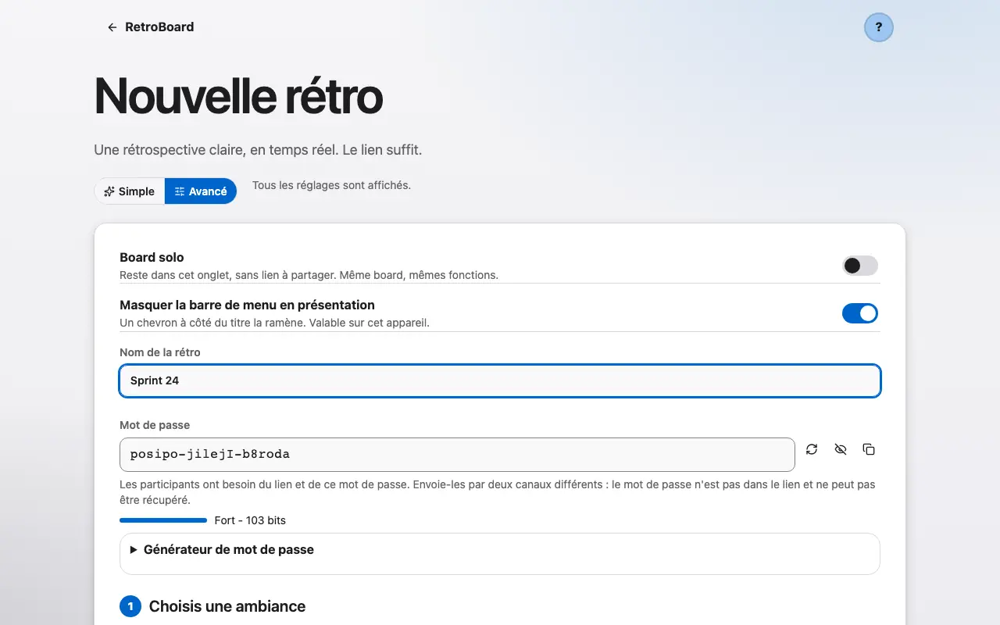
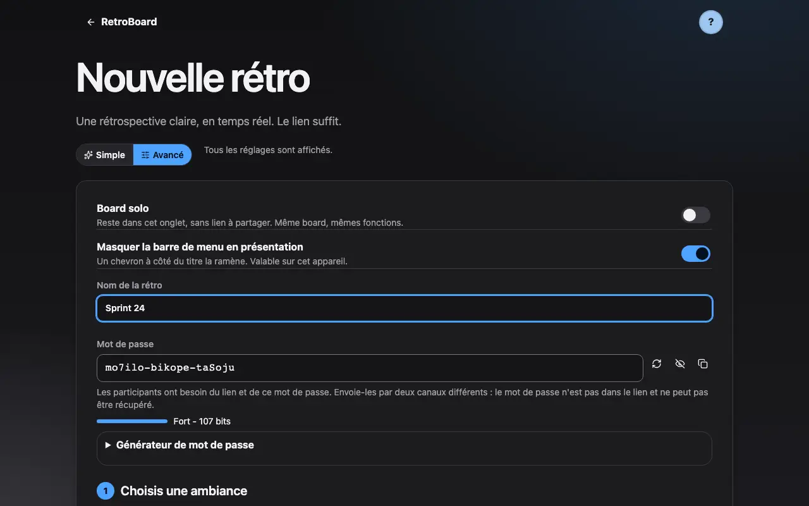
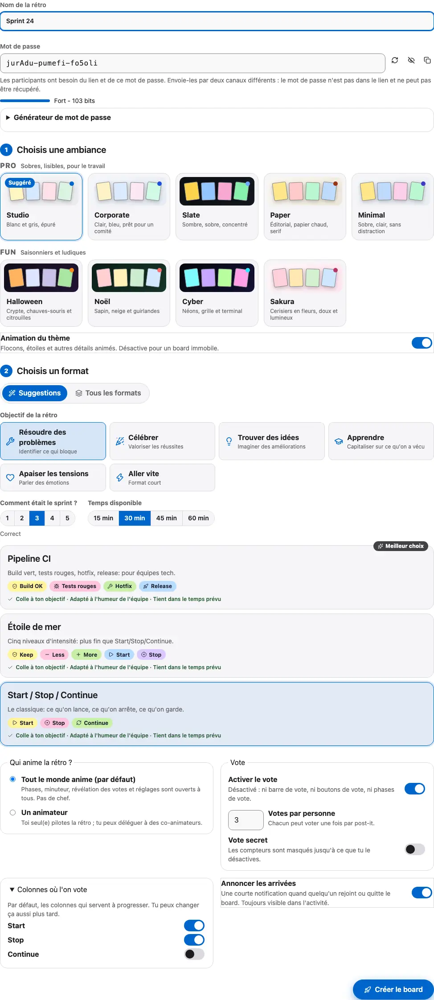
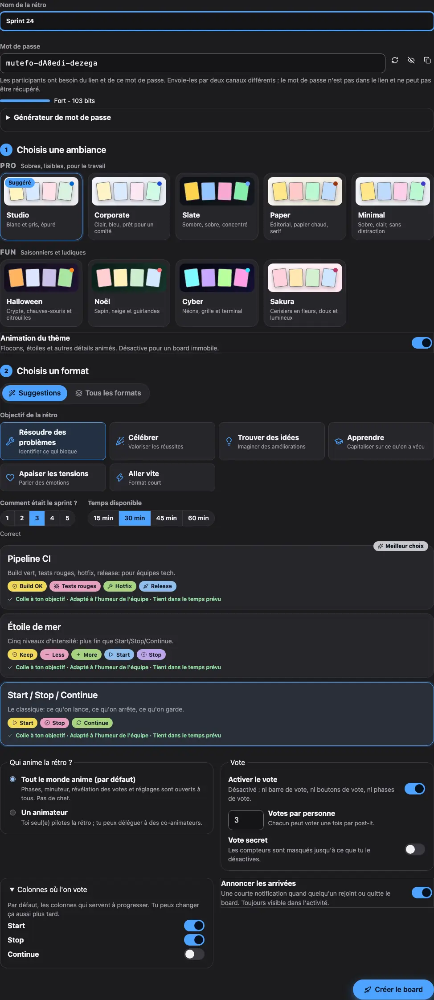

Créer un board
Un board se crée en quelques secondes: un titre, un format, un thème. Aucun compte n’est nécessaire.
1 Donne un titre au board et choisis un format de rétro.
Ouvre la page de création, donne un titre au board (par exemple « Sprint 24 ») et choisis un format de rétro: Start, Stop, Continue, Ce qui a bien marché, Voilier et bien d'autres. Un mot de passe est proposé par défaut: il protège l'accès au board en plus du lien. En mode avancé, un board appartient à une équipe: elle démarre son prochain board avec son dernier format, son thème et son agenda, et propose le numéro suivant de la série (« Sprint 24 » devient « Sprint 25 »). Avec deux équipes ou plus, un sélecteur d'équipe apparaît au-dessus de tes boards récents, sur l'accueil et dans ton profil. Choisis une équipe pour n'afficher que ses boards; elle devient aussi l'équipe de ton prochain board. « Toutes les équipes » affiche de nouveau tout. Les équipes restent sur cet appareil: rien n'est envoyé à un serveur. Pour emmener une équipe sur un autre appareil, ouvre ton profil, puis « Partager une équipe »: copie le lien d'équipe chiffré ou télécharge le fichier .retroteam. Il porte le nom, l'allure et les réglages de l'équipe, jamais un board, une note ou une action. Sur l'autre appareil, ouvre le lien ou le fichier et l'équipe rejoint ta liste.


2 Le thème est choisi par le facilitateur et vaut pour toute l’équipe.
Le thème est choisi par la personne qui anime et vaut pour toute l'équipe. Chacun garde le choix de la variante claire ou sombre pour lui seul.

